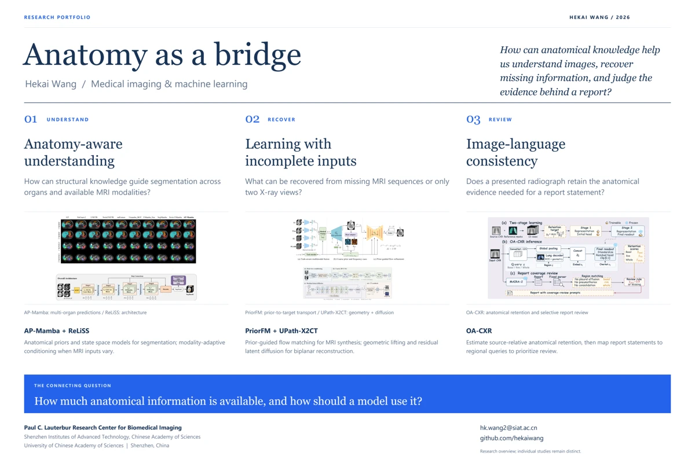

MEDICAL IMAGING & MACHINE LEARNING
Hekai Wang.
Anatomy-guided learning
from incomplete information.
I am a master’s student at the University of Chinese Academy of Sciences, conducting research at the Paul C. Lauterbur Research Center for Biomedical Imaging, SIAT, CAS, advised by Prof. Haifeng Wang and Prof. Dong Liang.
I study how anatomical structure can guide segmentation, synthesis, and image–language analysis when medical images are incomplete or heterogeneous.
as a bridge.
What remains when
information is missing?
Different MRI sequences reveal complementary anatomy. Limited X-ray views constrain what can be reconstructed. A cropped radiograph changes the evidence available for a report.
Across these settings, I am interested in models that use anatomical priors, modality-aware representations, and explicit evidence to make better use of the information that remains.
Questions, methods,
and evidence.
Five projects across medical image understanding,
synthesis, and selective report review.
Anatomy as a bridge
A visual research overview connecting the questions behind these projects.
Open research poster · PDF ↗
Selected writing.
6 selected works
Accepted · EMBC 2026 · Oral
AP-Mamba: Anatomy-Aware State Space Models for Multi-organ Abdominal MRI Segmentation
Under review · AAAI · Equal contribution
Beyond the Best Guess: Source-Identifiable Candidate Support Learning for Cross-Modal Medical Image Synthesis
* Equal contribution
AnatoTextSeg
Multi-organ segmentation guided by structured anatomical text.
Education & research.
EDUCATION
University of Chinese Academy of Sciences
M.S. in Computer Technology
Beijing / Shenzhen, China
Hubei University of Technology
B.E. in Mechanical Engineering
Wuhan, China
RESEARCH APPOINTMENT
Graduate Student Research Assistant
Shenzhen Institutes of Advanced Technology
Chinese Academy of Sciences
Paul C. Lauterbur Research Center
for Biomedical Imaging
Advised by Prof. Haifeng Wang
and Prof. Dong Liang
PyTorch · Python · MATLAB · C++
3D medical imaging, flow matching, diffusion models, and multimodal learning.
Research starts
with a conversation.
I am interested in PhD opportunities in medical image analysis,
generative modeling, and multimodal learning.